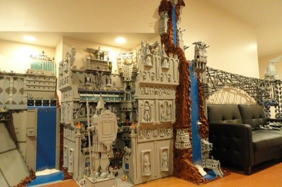
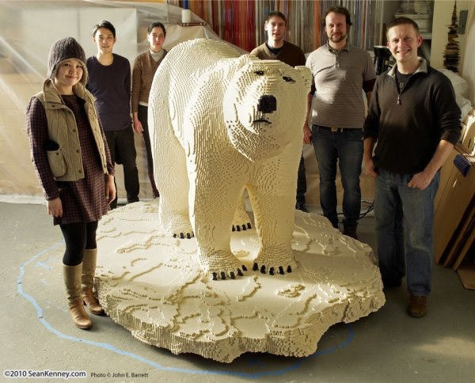

Как игрушка для "больших" детей
Компания LEGO Group была основана в 1932 году. Её основателем стал датчанин Оле Кирк Кристиансен, являвшийся в то время бригадиром команды плотников и столяров. Задача, которая стояла перед работниками компании (поначалу она состояла всего из 7 человек), — создать игрушки, развивающие воображение, изобретательность и творческие способности ребёнка. Изначально, все кубики были деревянными, из—за чего компания несла огромный ущерб во время пары пожаров. Но уже в 1947 году компания расширила производство и начала выпуск пластиковых игрушек. Начиная с момента своего появления в 1949 году, элементы LEGO во всех своих вариантах остаются совместимы друг с другом. Так, элементы, созданные в 1958 году, по-прежнему соединяются с элементами, выпущенными сейчас, несмотря на радикальные изменения в дизайне и форме элементов за эти годы.
Хотя изначально LEGO планировалось, как развлечение для детей, им вскоре стали увлекаться и вполне солидные взрослые. В наши дни есть много "взрослых" творцов, которые в душе дети. И часто можно услышать подобный упрёк:"Ты уже вырос! Хватит копаться в этом детском конструкторе!". Так знайте: человек взрослеет только по годам, и часто в пожилых людях живут настоящие дети, которые хотят творить, изобретать создавать. Так не слушайте те речи! Хотите - творите! Хотите - изобретайте! Главное, не бойтесь ошибиться, показаться маленьким. Творить могут не только дети, но и все-все-все! Не закрывайтесь в себе, ТВОРИТЕ!
 andrzot@yandex.ru - cайт создан Андреем Зотовым при поддержке Школы Программистов - www.informatics.ru